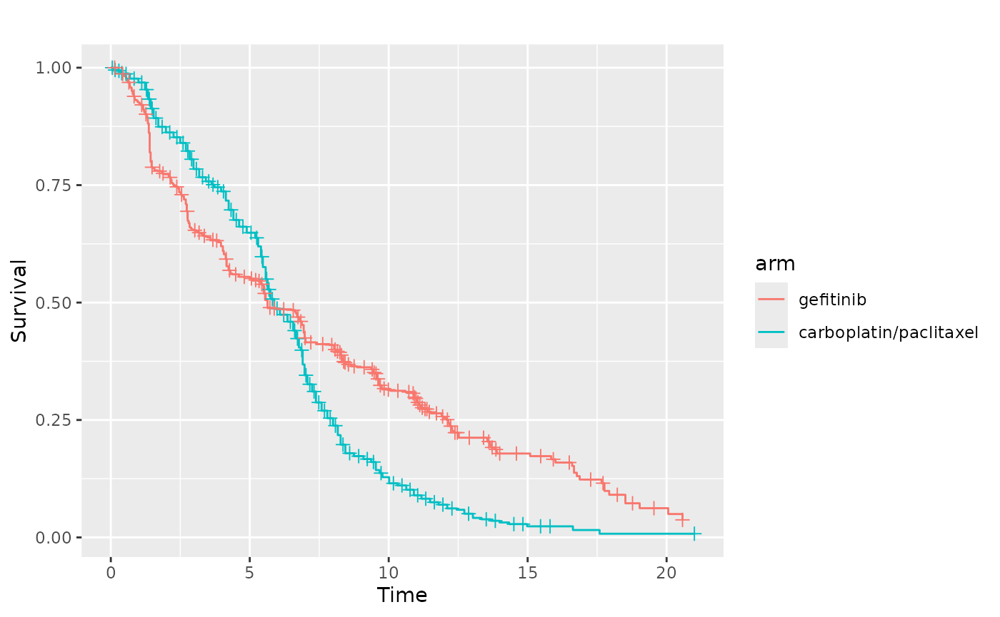

In this vignette we demonstrate how likelihood ratio tests (LRT)
involving nested models can be performed using the
survstan::anova() function.
Ipass data
The survstan::ipass data illustrates a real situation in
which we have the presence of crossing survival curves. In this case,
both the PH and PO models are inadequate, and the YP model should be
considered for the data analysis.
data(ipass)
glimpse(ipass)
#> Rows: 1,217
#> Columns: 3
#> $ time <dbl> 0.102703, 0.102703, 0.102703, 0.205483, 0.376758, 0.376758, 0.3…
#> $ status <int> 1, 1, 1, 1, 1, 1, 1, 1, 1, 1, 1, 1, 1, 1, 1, 1, 1, 1, 1, 1, 1, …
#> $ arm <dbl> 0, 0, 0, 0, 0, 0, 0, 0, 0, 0, 0, 0, 0, 0, 0, 0, 0, 0, 0, 0, 0, …
ipass <- ipass %>%
mutate(
arm = as.factor(ipass$arm),
arm = ifelse(arm == 1, "gefitinib", "carboplatin/paclitaxel")
)
km <- survfit(Surv(time, status) ~ arm, data = ipass)
ggsurv(km) 
Since the YP models includes both the PH and PO models as particular cases, we can perform LRT as follows:
aft <- aftreg(Surv(time, status)~arm, data=ipass, dist = "weibull")
ah <- ahreg(Surv(time, status)~arm, data=ipass, dist = "weibull")
ph <- phreg(Surv(time, status)~arm, data=ipass, dist = "weibull")
po <- poreg(Surv(time, status)~arm, data=ipass, dist = "weibull")
yp <- ypreg(Surv(time, status)~arm, data=ipass, dist = "weibull")
eh <- ehreg(Surv(time, status)~arm, data=ipass, dist = "weibull")
anova(ph, yp)
#>
#> weibull(ph) 1: Surv(time, status) ~ arm
#> weibull(yp) 2: Surv(time, status) ~ arm
#> ---
#> loglik LR df Pr(>Chi)
#> weibull(ph) 1: -2839.24 133.72 1 < 2.2e-16 ***
#> weibull(yp) 2: -2772.38 - - -
#> ---
#> Signif. codes: 0 '***' 0.001 '**' 0.01 '*' 0.05 '.' 0.1 ' ' 1
anova(po, yp)
#>
#> weibull(po) 1: Surv(time, status) ~ arm
#> weibull(yp) 2: Surv(time, status) ~ arm
#> ---
#> loglik LR df Pr(>Chi)
#> weibull(po) 1: -2851.32 157.89 1 < 2.2e-16 ***
#> weibull(yp) 2: -2772.38 - - -
#> ---
#> Signif. codes: 0 '***' 0.001 '**' 0.01 '*' 0.05 '.' 0.1 ' ' 1
anova(aft, eh)
#>
#> weibull(aft) 1: Surv(time, status) ~ arm
#> weibull(eh) 2: Surv(time, status) ~ arm
#> ---
#> loglik LR df Pr(>Chi)
#> weibull(aft) 1: -2839.24 133.72 1 < 2.2e-16 ***
#> weibull(eh) 2: -2772.38 - - -
#> ---
#> Signif. codes: 0 '***' 0.001 '**' 0.01 '*' 0.05 '.' 0.1 ' ' 1
anova(ah, eh)
#>
#> weibull(ah) 1: Surv(time, status) ~ arm
#> weibull(eh) 2: Surv(time, status) ~ arm
#> ---
#> loglik LR df Pr(>Chi)
#> weibull(ah) 1: -2839.24 133.72 1 < 2.2e-16 ***
#> weibull(eh) 2: -2772.38 - - -
#> ---
#> Signif. codes: 0 '***' 0.001 '**' 0.01 '*' 0.05 '.' 0.1 ' ' 1
anova(ph, eh)
#>
#> weibull(ph) 1: Surv(time, status) ~ arm
#> weibull(eh) 2: Surv(time, status) ~ arm
#> ---
#> loglik LR df Pr(>Chi)
#> weibull(ph) 1: -2839.24 133.72 1 < 2.2e-16 ***
#> weibull(eh) 2: -2772.38 - - -
#> ---
#> Signif. codes: 0 '***' 0.001 '**' 0.01 '*' 0.05 '.' 0.1 ' ' 1